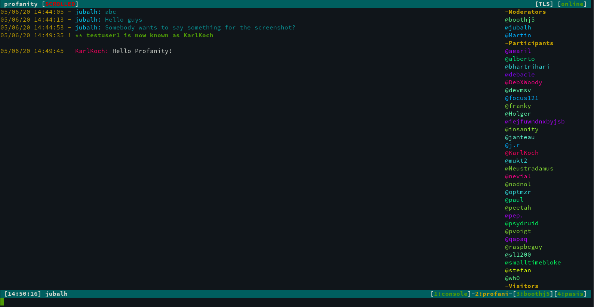

Profanity 0.9.0
jubalhFour months and 350 commits after 0.8.1 we are happy to release 0.9.0.
7 people contributed code to it: pasis, wstrm, DebXWoody, toogley, pmaziere, moppman and jubalh.
Thanks to everybody who was involved, be it testing, writing documentation, updating the website or whatever you did! I also would like to express my gratitude to my sponsors mdosch and wstrm!

LMC
We support XEP-0308: Last Message Correction now.
Enable it with /correction on. If you mistyped a word just type /correct and hit tab to autocomplete the last sent message, then fix it and press enter.
Slashguard
In our MUC we often see messages like “q/uit” or people having whitespaces before a command “ /quit”.
To help you to avoid such mistakes we introduce slashguard.
Once enabled (/slashguard on) Profanity won’t send messages that contain a slash in the first four letters.
New parameters
You can specify a logfile upon startup via the new -f option:
profanity -f TEST will log to ~/.local/share/profanity/logs/TEST.log.
Hopefully this is useful for our testers!
The new -t option will let you select a theme right at startup: /profanity -t bios.
This is useful if you run multiple instances of Profanity. Maybe you have multiple accounts and want to visually destinguish between them.
Did you know we have a blogpost that should help you create such a setup with tmux?
Titlebar
Previously you could choose whether to display the MUC name or MUC title in the titlebar. Now you can choose to do both or neither.
/titlebar use name|jid became /titlebar show|hide name|jid.
What software is this server running?
You can now use XEP-0092 not just to request client software information but also server software information.
Use /serversoftware domain.org.
Theming
You can now colorize your trackbar by using main.trackbar in your theme.
And you can use UTF-8 symbols as your OMEMO char.
You can now choose not to colorize your own nick if you enabled XEP-0392.
Use /color own off if you want consistent color generation for everybody else but not for yourself.
MUC history messages were colored in one uniform color (grey by default). Many users would just like to get the same coloring and hilighting for freshly received messages. So we removed the uniform color feature #1261.
And there is a new theme based on default: jubalian. Check it out ;)
Avatars
Avatars can not only be downloaded but also opened automatically now.
In 0.8.x you used /avatar odin@valhalla.org.
Now you can either just download it /avatar get odin@valhalla.org or open it: /avatar open odin@valhalla.org.
By default we rely on xdg-open, so your default image viewer will be used.
But you can choose to configure it yourself. For example to use feh instead: /executable avatar feh
Open URLs
People often had issues with URLs that were too long and then broken into several lines. If they were in a MUC and had the occupants panel enabled, this made it impossible to click on the URL to open it because it was not one consecutive string.
If you run Profanity locally (not on a remote machine where you log in via ssh) you can use use /urlopen to open an URL in your browser.
We use xdg-open again. But you can configure it with /executable urlopen firefox.
OMEMO
OMEMO autocompletion had some quirks. We fixed them! We also stopped requesting the device list in non anon MUCs.
Scrolling
Sometimes it happened that you scroll up a window to read up on something. Then switch to another application and later forget that you actually scrolled up. Why is noone saying anything in this MUC anymore?
In this version of Profanity we display a hint in the titlebar if a window is scrolled. Use titlebar.scrolled to theme it.
Legacy authentication
Some servers still only allow legacy authentication #1236. If you want to connect to them you will need libstrophe 0.9.3 and Profanity 0.9.0.
Use /connect <account> [auth default|legacy] or /account <account> set auth default|legacy.
Too many tabs
In case you many opened windows you might want to only display the ones that have something going on in them.
Use /statusbar show|hide read to configure this to your liking.
Bookmarks
We now print the boomark names when using /bookmark list. You can also now add a name when using /bookmark add.
Gajim uses a custom way to save whether (autojoined) bookmarks should be minimized. When we updated a bookmark in Profanity we didn’t respect this flag and it was overwritten. Now Profanity works nicer with Gajim #1326.
When you use multiple clients you probalby have some MUCs that you want to join on all devices. You use the autojoin flag for these cases.
If you want to ignore the autojoin flag in a Profanity instance you can use /bookmark ignore.
Narrow terminals
We can’t support all edge cases and users will need to have a reasonable window size to use Profanity properly. We fixed a bug about a messed up titlebar if a user had a very long resource name #715.
Change in default settings
To give a better experience to new users we changed the default settings for some popular features.
- Allow message correction
- Send receipts
- Enable carbons
- Enable type/chat states
Under the hood
Plenty of memory leaks where discovered and fixed. Profanity should run a lot smoother now. The UI and message functions were cleaned up in preparation to add MAM support.
Messages are now logged in an sqlite database which is located at ~/.local/share/profanity/database/accountname/chatlog.db.
All later retrieval (history) is done using this database from now on. We still output regular chat logs in ~/.local/share/profanity/chatlogs if the user enabled it (/loggin chat|group on) but don’t rely on them anymore. They are just for the users convenience.
This will also benefit us when implementing message searching #206 or MAM #660 for example.
We always send delivery receipts and not just if the other client advertises it #1268.
Some users experienced connectivity problems. Several things were done by DebXWoody to improve this.
We also had an edge case where the roster only displayed offline contacts because we received the presence after the roster.